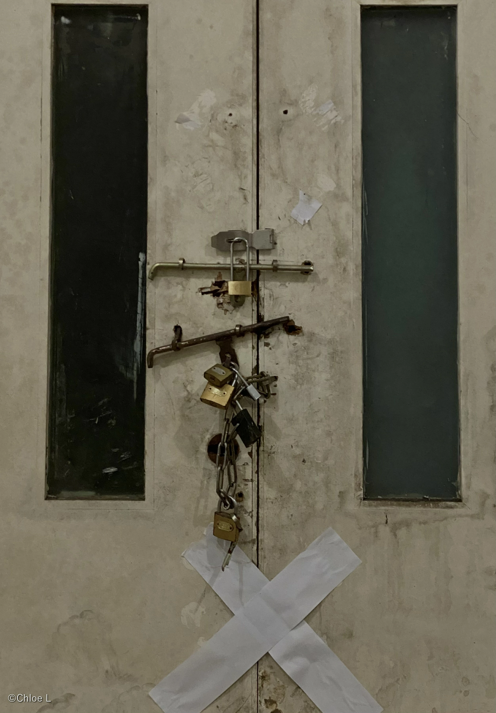
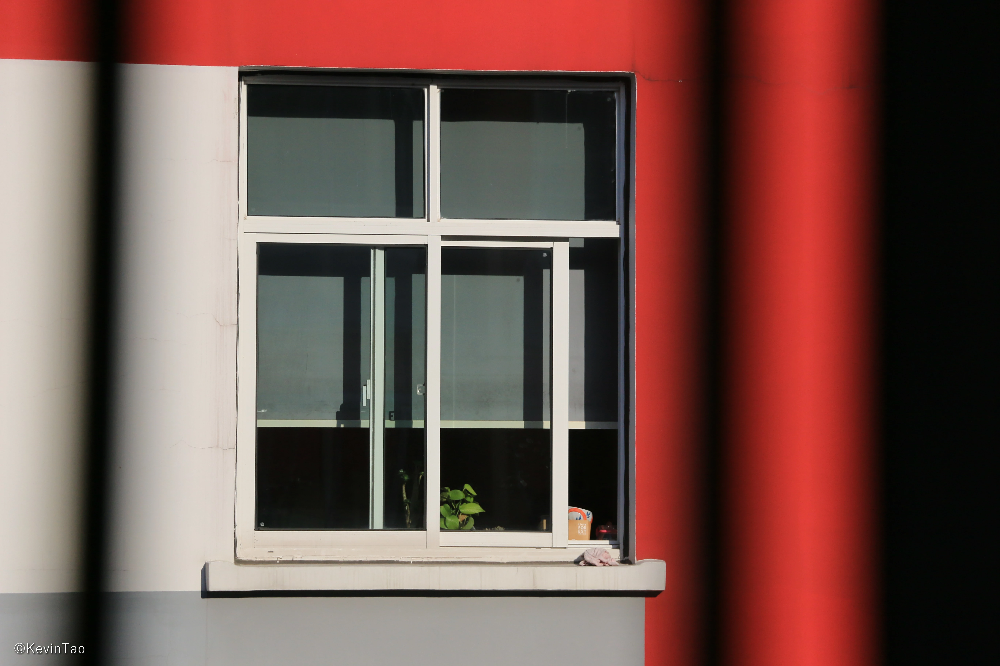
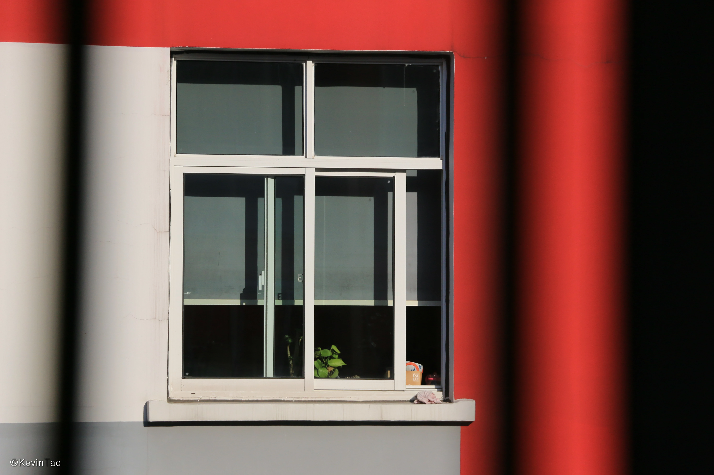

Lone
literal meaning: alone; lonely.
The windows in the photos all appear individually and clearly,
The most direct to show us their most simple charm.
The windows in the photos all appear individually and clearly,
The most direct to show us their most simple charm.


 
